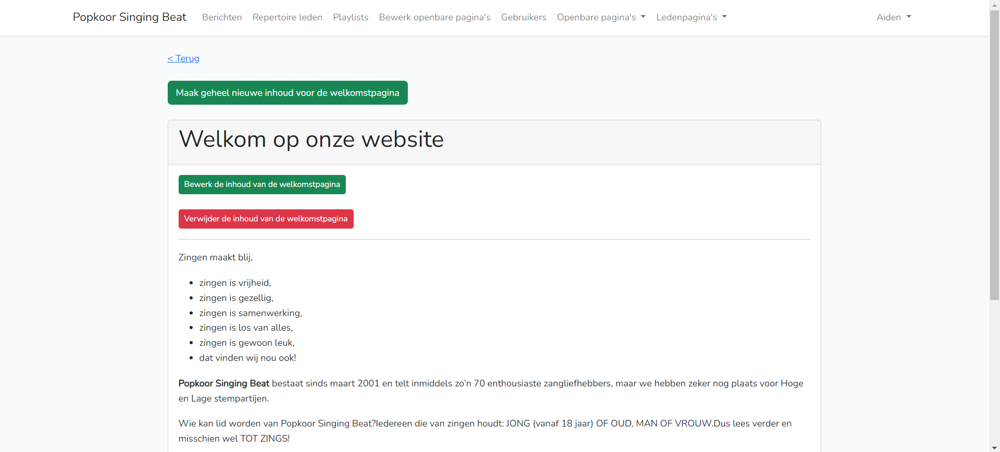
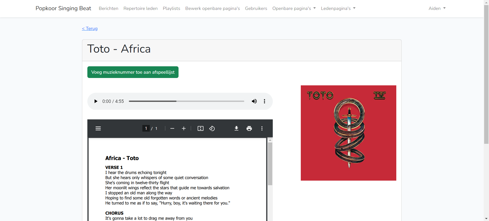
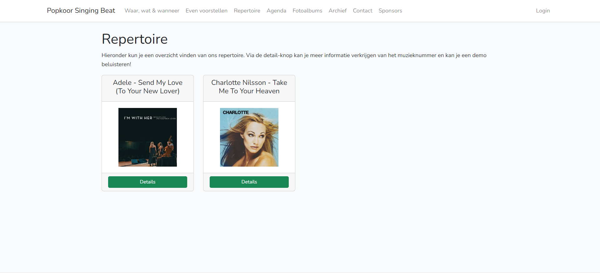
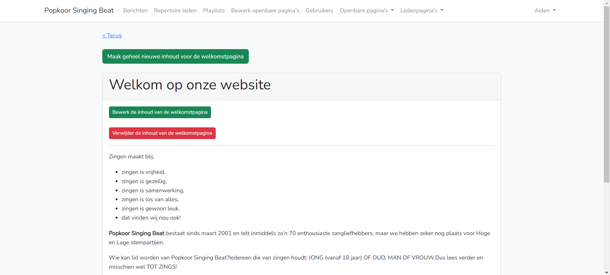
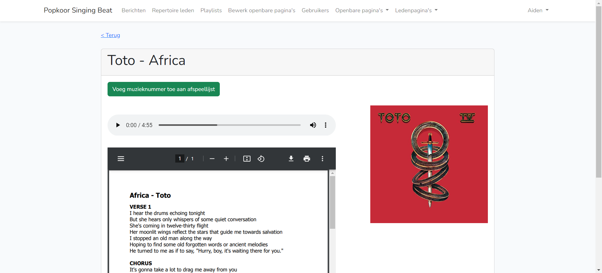
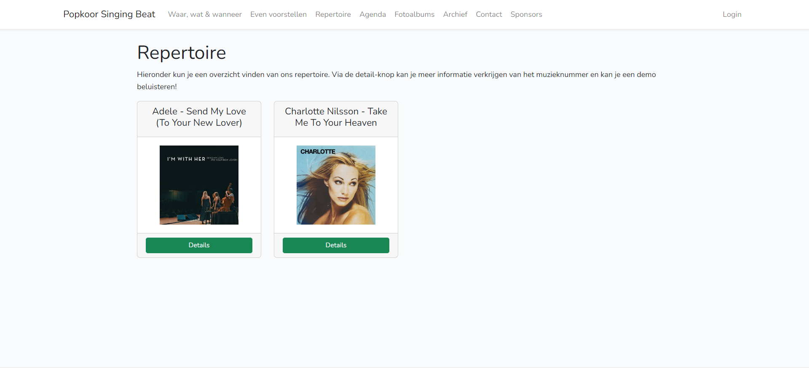

Popkoor Singing Beat
Together with a team of five students, I worked on redesigning and rebuilding the outdated website of Popkoor Singing Beat. Their previous website had not been maintained for years, resulting in an old-fashioned interface, inconsistent communication channels, and no proper system for practicing music.
Our solution was a fully modernized website built with the Laravel PHP framework. The new platform centralizes all communication, ensuring members always receive accurate, up-to-date information. Administrators can post announcements, upload files, manage members, and keep every page updated without technical knowledge.
One of the most impactful features is the integrated music practice system. Admins can upload songs for choir members to rehearse, and hide them again when they are no longer relevant. The entire website is designed to be future-proof, user-friendly, and adaptable -creating a reliable digital home for the choir's community.
 





Project Context
This project was part of the TLE module, where our challenge was to solve a real-world problem for an external client. Popkoor Singing Beat needed a modern communication hub that would streamline their workflow, reduce confusion, and provide better support for choir members.
We delivered a completely renewed platform that supports announcements, file sharing, agenda management, music pratice, and dynamic content editing -allowing the choir to operate more efficiently than ever before.
My Role
Within the team, I was fully responsible for the back-end development of the new Laravel application. This meant ensuring that all core logic functioned correctly -from handling data flow and processing user actions to implementing features that the admin and choir members rely on.
I contributed to analyzing the limitations of the old website and translating the choir's needs into a stable and scalable back-end structure. I implemented the functional logic behind communication tools, music pratice features, file management, member management, and dynamic content editing.
Additionally, I supported the team by helping shape the system architecture and making sure the platform behaved reliably and efficiently. Through this project, I gained valuable experience in Laravel, collaborative development, and building real-world back-end solutions tailored to a client's wokrflow.